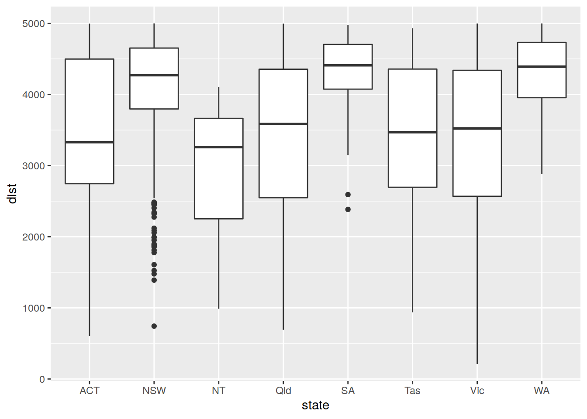
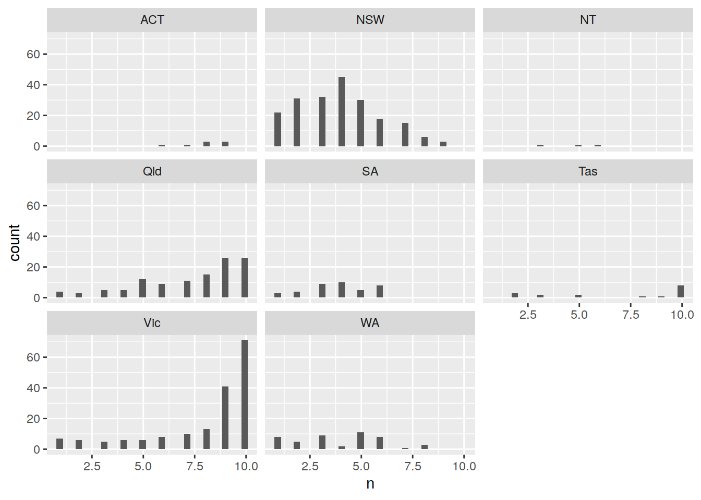
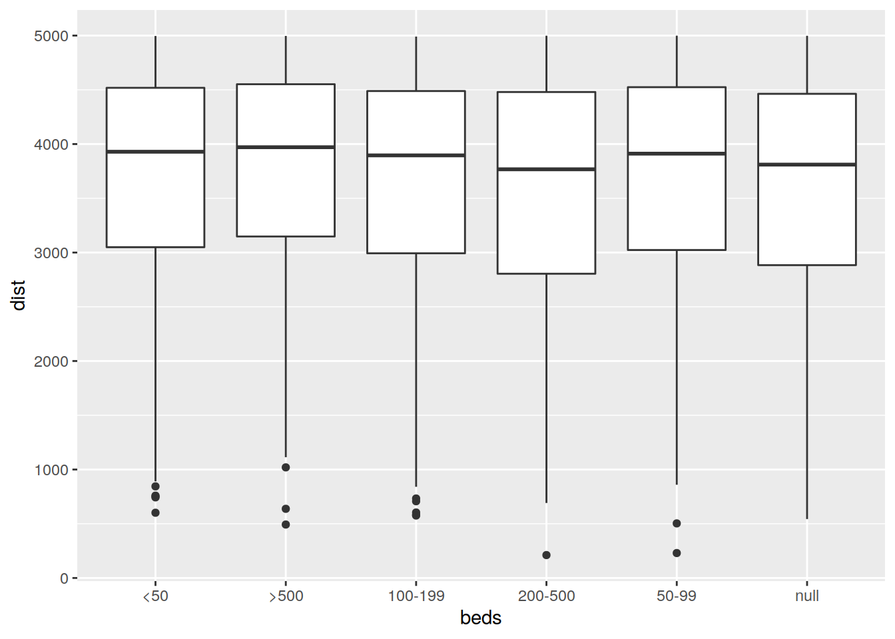

Last updated: 2020-07-15
Checks: 7 0
Knit directory: R/
This reproducible R Markdown analysis was created with workflowr (version 1.6.2). The Checks tab describes the reproducibility checks that were applied when the results were created. The Past versions tab lists the development history.
Great! Since the R Markdown file has been committed to the Git repository, you know the exact version of the code that produced these results.
Great job! The global environment was empty. Objects defined in the global environment can affect the analysis in your R Markdown file in unknown ways. For reproduciblity it’s best to always run the code in an empty environment.
The command set.seed(20200708) was run prior to running the code in the R Markdown file. Setting a seed ensures that any results that rely on randomness, e.g. subsampling or permutations, are reproducible.
Great job! Recording the operating system, R version, and package versions is critical for reproducibility.
Nice! There were no cached chunks for this analysis, so you can be confident that you successfully produced the results during this run.
Great job! Using relative paths to the files within your workflowr project makes it easier to run your code on other machines.
Great! You are using Git for version control. Tracking code development and connecting the code version to the results is critical for reproducibility.
The results in this page were generated with repository version 6edd2c2. See the Past versions tab to see a history of the changes made to the R Markdown and HTML files.
Note that you need to be careful to ensure that all relevant files for the analysis have been committed to Git prior to generating the results (you can use wflow_publish or wflow_git_commit). workflowr only checks the R Markdown file, but you know if there are other scripts or data files that it depends on. Below is the status of the Git repository when the results were generated:
Ignored files:
Ignored: keys.R
Untracked files:
Untracked: .drake/
Untracked: .env
Untracked: R/
Untracked: _drake.R
Untracked: a.R
Untracked: a.md
Untracked: data/hospital_locations.csv
Untracked: data/metadata8413661584756473831.json
Untracked: debug.R
Untracked: explore/
Untracked: packages.R
Unstaged changes:
Deleted: .Rprofile
Modified: .gitignore
Note that any generated files, e.g. HTML, png, CSS, etc., are not included in this status report because it is ok for generated content to have uncommitted changes.
These are the previous versions of the repository in which changes were made to the R Markdown (analysis/five_km.Rmd) and HTML (docs/five_km.html) files. If you’ve configured a remote Git repository (see ?wflow_git_remote), click on the hyperlinks in the table below to view the files as they were in that past version.
| File | Version | Author | Date | Message |
|---|---|---|---|---|
| Rmd | 6edd2c2 | Dennis Wollersheim | 2020-07-15 | workflowr::wflow_publish(“analysis/five_km.Rmd”) |
source('_drake.R')── Attaching packages ─────────────────────────────────────── tidyverse 1.3.0 ──✔ ggplot2 3.3.0 ✔ purrr 0.3.4
✔ tibble 3.0.1 ✔ dplyr 1.0.0
✔ tidyr 1.1.0 ✔ stringr 1.4.0
✔ readr 1.3.1 ✔ forcats 0.5.0Loading required package: spatstat.dataLoading required package: nlme
Attaching package: 'nlme'The following object is masked from 'package:dplyr':
collapseLoading required package: rpartRegistered S3 method overwritten by 'spatstat':
method from
print.boxx cli
spatstat 1.64-1 (nickname: 'Help you I can, yes!')
For an introduction to spatstat, type 'beginner' R.cache v0.14.0 successfully loaded. See ?R.cache for help.[conflicted] Will prefer dplyr::filter over any other package[conflicted] Will prefer dplyr::summarise over any other packageloadd(df_hospitals)
#loadd(df_neighbours)
loadd(df_pt_segments_small)df_hospitals %>%
count( state, beds ) %>%
pivot_wider(id_cols=state, names_from = beds, values_from=n) %>%
janitor::clean_names() %>%
select( state, x50, x50_99, x100_199, x200_500, x500, null ) %>%
gt() %>%
tab_header(
title = "Hospital Dataset",
subtitle = "Number of institutions by size and and state "
) %>%
cols_label(
x50 = "<50",
x50_99 = "50-99",
x100_199 = "100-199",
x200_500 = "200-500",
x500 = ">500",
null = 'Unknown'
)| Hospital Dataset | ||||||
|---|---|---|---|---|---|---|
| Number of institutions by size and and state | ||||||
| state | <50 | 50-99 | 100-199 | 200-500 | >500 | Unknown |
| ACT | 3 | 2 | 1 | 1 | 1 | NA |
| NSW | 185 | 54 | 33 | 23 | 10 | 15 |
| NT | 2 | 1 | 2 | 1 | NA | NA |
| Qld | 163 | 21 | 23 | 19 | 6 | 28 |
| SA | 73 | 15 | 7 | 6 | 2 | 2 |
| Tas | 19 | 4 | 3 | 2 | NA | 2 |
| Vic | 116 | 40 | 39 | 19 | 6 | 14 |
| WA | 78 | 7 | 12 | 9 | 4 | 2 |
df_hospitals %>%
left_join( df_pt_segments_small %>% distinct(id) %>% mutate(has_pt='has_pt' ) ) %>%
count( state, beds, has_pt ) %>%
replace_na(list(n=0, has_pt='no_pt')) %>%
pivot_wider(id_cols=c(state, beds), names_from = has_pt, values_from=n) %>%
replace_na(list(no_pt=0, has_pt=0)) %>%
mutate(pt_pct = has_pt / (has_pt+no_pt)) %>%
select(-ends_with('pt')) %>%
pivot_wider(id_cols=state, names_from = beds, values_from=pt_pct) %>%
janitor::clean_names() %>%
select( state, x50, x50_99, x100_199, x200_500, x500, null ) %>%
gt() %>%
tab_header(
title = "Pt Accessible Hospitals",
subtitle = "Percentage accessible by public transport"
) %>%
fmt_percent(
columns = 2:7,
decimals = 1,
drop_trailing_zeros = TRUE
) %>%
data_color(
columns = 2:7,
colors = scales::col_numeric(
palette = paletteer::paletteer_d(
palette = "ggsci::red_material"
) %>% as.character(),
domain = NULL
),
alpha = 0.8
) %>%
cols_label(
x50 = "<50",
x50_99 = "50-99",
x100_199 = "100-199",
x200_500 = "200-500",
x500 = ">500",
null = 'Unknown'
) %>%
tab_footnote(
footnote = "NA means there were no hospitals in this category",
locations = cells_body( columns = vars(x500), rows = is.na(x500))
)Joining, by = "id"| Pt Accessible Hospitals | ||||||
|---|---|---|---|---|---|---|
| Percentage accessible by public transport | ||||||
| state | <50 | 50-99 | 100-199 | 200-500 | >500 | Unknown |
| ACT | 100% | 100% | 100% | 100% | 100% | NA |
| NSW | 40% | 88.9% | 100% | 100% | 100% | 93.3% |
| NT | 0% | 0% | 100% | 100% | NA1 | NA |
| Qld | 22.7% | 90.5% | 100% | 100% | 100% | 42.9% |
| SA | 17.8% | 60% | 100% | 100% | 100% | 100% |
| Tas | 31.6% | 100% | 100% | 100% | NA1 | 100% |
| Vic | 47.4% | 100% | 100% | 100% | 100% | 100% |
| WA | 16.7% | 100% | 100% | 100% | 100% | 100% |
|
1
NA means there were no hospitals in this category
|
||||||
df_hospitals %>%
left_join( df_pt_segments_small %>% distinct(id) %>% mutate(has_pt='has_pt' ) ) %>%
count( state, description, has_pt ) %>%
replace_na(list(n=0, has_pt='no_pt')) %>%
pivot_wider(id_cols=c(state, description), names_from = has_pt, values_from=n) %>%
replace_na(list(no_pt=0, has_pt=0)) %>%
mutate(pt_pct = has_pt / (has_pt+no_pt)) %>%
select(-ends_with('pt')) %>%
pivot_wider(id_cols=description, names_from = state, values_from=pt_pct) %>%
janitor::clean_names() %>%
gt() %>%
tab_header(
title = "Pt Accessible Hospitals by Hospital Type ",
subtitle = "Percentage accessible by public transport"
) %>%
fmt_percent(
columns = 2:9,
decimals = 1,
drop_trailing_zeros = TRUE
) %>%
data_color(
columns = 2:9,
colors = scales::col_numeric(
palette = paletteer::paletteer_d(
palette = "ggsci::red_material"
) %>% as.character(),
domain = NULL
),
alpha = 0.8
)Joining, by = "id"| Pt Accessible Hospitals by Hospital Type | ||||||||
|---|---|---|---|---|---|---|---|---|
| Percentage accessible by public transport | ||||||||
| description | act | nsw | nt | qld | sa | tas | vic | wa |
| Early parenting centre | 100% | 100% | NA | 100% | NA | NA | 100% | NA |
| Major metropolitan hospital with an emergency department | 100% | 100% | NA | 100% | 100% | NA | 100% | 100% |
| null | 100% | 95.8% | 100% | 98.6% | 96% | 100% | 100% | 100% |
| Drug and alcohol hospital | NA | 100% | NA | NA | NA | NA | NA | 100% |
| Large metropolitan hospital with an emergency department | NA | 100% | NA | 100% | 100% | NA | 100% | 100% |
| Large regional hospital with an emergency department | NA | 100% | NA | 0% | NA | 100% | 100% | 100% |
| Major regional hospital with an emergency department | NA | 100% | 100% | 100% | NA | 100% | 100% | 100% |
| Medium-sized metropolitan hospital with an emergency department | NA | 100% | NA | 100% | 100% | NA | 100% | NA |
| Medium-sized regional hospital with an emergency department | NA | 62.5% | NA | 100% | 0% | 100% | 100% | NA |
| Metropolitan hospital | NA | 100% | NA | NA | 100% | NA | 100% | 100% |
| Regional hospital | NA | 42.9% | NA | 0% | 0% | 50% | 35.7% | 0% |
| Regional hospital with an emergency department | NA | 10% | 0% | NA | 0% | NA | NA | 33.3% |
| Regional hospital with emergency services | NA | 0% | NA | 4.2% | NA | NA | 0% | NA |
| Small metropolitan hospital with an emergency department | NA | 100% | NA | NA | NA | NA | NA | NA |
| Small metropolitan hospital with emergency services | NA | 100% | NA | 100% | NA | NA | NA | NA |
| Small regional hospital with an emergency department | NA | 7.4% | 0% | NA | NA | NA | NA | NA |
| Small regional hospital with emergency services | NA | 33.3% | NA | 4.2% | 0% | NA | 14.5% | 1.6% |
| Specialist children''s hospital with an emergency department | NA | 100% | NA | 100% | NA | NA | 100% | 100% |
| Specialist dental hospital | NA | 100% | NA | NA | NA | NA | 100% | NA |
| Specialist orthopaedic hospital | NA | 100% | NA | NA | NA | NA | NA | NA |
| Specialist psychiatric hospital | NA | 100% | NA | 75% | 100% | NA | 100% | 100% |
| Specialist rehabilitation hospital | NA | 80% | NA | NA | 100% | NA | 100% | NA |
| Specialist women''s hospital | NA | 100% | NA | 100% | NA | NA | NA | NA |
| Medium-sized regional hospital with emergency services | NA | NA | NA | 66.7% | 20% | NA | 70% | 50% |
| Large metropolitan hospital | NA | NA | NA | NA | 100% | NA | 100% | NA |
| Specialist women''s and children''s hospital with an emergency department | NA | NA | NA | NA | 100% | NA | NA | NA |
| Small regional hospital | NA | NA | NA | NA | NA | 16.7% | NA | NA |
| Medium-sized metropolitan hospital | NA | NA | NA | NA | NA | NA | 100% | 100% |
| Specialist cancer hospital | NA | NA | NA | NA | NA | NA | 100% | NA |
| Specialist eye and ear hospital with an emergency department | NA | NA | NA | NA | NA | NA | 100% | NA |
| Specialist women''s hospital with an emergency department | NA | NA | NA | NA | NA | NA | 100% | 100% |
time vs distance - box plot box plot of total time by type box plot of total time by type
coorelation plot of total time, description, beds, state, nsegments_walking, nsegments_transit, duration_walking, duration_transit, distance
range of distances
Note NSW and SA distance distributions have strange shapes,probably due to the algorithm that translates random points into directions, and the location of the ocean with respect to their hospitals
df_pt_segments_small %>%
inner_join( df_hospitals , by='id') %>%
ggplot( aes( state, dist)) + geom_boxplot()
df_pt_segments_small %>%
inner_join( df_hospitals , by='id') %>%
group_by( state) %>%
summarise( n(), sd(dist), mean(dist)) %>%
gt()`summarise()` ungrouping output (override with `.groups` argument)| state | n() | sd(dist) | mean(dist) |
|---|---|---|---|
| ACT | 64 | 1136.8262 | 3357.634 |
| NSW | 798 | 694.2270 | 4127.173 |
| NT | 14 | 1047.3213 | 2939.886 |
| Qld | 850 | 1065.1981 | 3423.538 |
| SA | 151 | 493.2339 | 4320.232 |
| Tas | 119 | 1055.0262 | 3391.119 |
| Vic | 1389 | 1098.9528 | 3387.037 |
| WA | 187 | 477.8945 | 4306.631 |
Note, many of the hospitals could not get 10 directions out of the 20 that we tried. The random point allocation process is a blunt instrument
df_pt_segments_small %>%
inner_join( df_hospitals , by='id') %>%
count( state, id) %>%
ggplot( aes( n )) + geom_histogram() +
facet_wrap(~state)`stat_bin()` using `bins = 30`. Pick better value with `binwidth`. Note, this strange distribution does not apply to the bed variable
df_pt_segments_small %>%
inner_join( df_hospitals , by='id') %>%
ggplot( aes( beds, dist)) + geom_boxplot()
df_pt_segments_small %>%
inner_join( df_hospitals , by='id') %>%
group_by( beds ) %>%
summarise( n(), sd(dist), mean(dist))`summarise()` ungrouping output (override with `.groups` argument)# A tibble: 6 x 4
beds `n()` `sd(dist)` `mean(dist)`
<chr> <int> <dbl> <dbl>
1 <50 1039 1013. 3688.
2 >500 197 1010. 3735.
3 100-199 790 1030. 3634.
4 200-500 532 1069. 3559.
5 50-99 692 1053. 3658.
6 null 322 1025. 3610.todo…
sessionInfo()R version 4.0.2 (2020-06-22)
Platform: x86_64-pc-linux-gnu (64-bit)
Running under: Ubuntu 18.04.4 LTS
Matrix products: default
BLAS: /usr/lib/x86_64-linux-gnu/openblas/libblas.so.3
LAPACK: /usr/lib/x86_64-linux-gnu/libopenblasp-r0.2.20.so
locale:
[1] LC_CTYPE=en_US.UTF-8 LC_NUMERIC=C
[3] LC_TIME=en_US.UTF-8 LC_COLLATE=en_US.UTF-8
[5] LC_MONETARY=en_US.UTF-8 LC_MESSAGES=en_US.UTF-8
[7] LC_PAPER=en_US.UTF-8 LC_NAME=C
[9] LC_ADDRESS=C LC_TELEPHONE=C
[11] LC_MEASUREMENT=en_US.UTF-8 LC_IDENTIFICATION=C
attached base packages:
[1] stats graphics grDevices utils datasets methods base
other attached packages:
[1] tidyselect_1.1.0 testthat_2.3.2 gt_0.2.0.5
[4] janitor_2.0.1 rmarkdown_2.1 foreign_0.8-79
[7] lubridate_1.7.8 tidyjson_0.3.1 purrrlyr_0.0.6
[10] googleway_2.7.1 R.cache_0.14.0 spatstat_1.64-1
[13] rpart_4.1-15 nlme_3.1-147 spatstat.data_1.4-3
[16] geosphere_1.5-10 revgeo_0.15 forcats_0.5.0
[19] stringr_1.4.0 dplyr_1.0.0 purrr_0.3.4
[22] readr_1.3.1 tidyr_1.1.0 tibble_3.0.1
[25] ggplot2_3.3.0 tidyverse_1.3.0 drake_7.12.1.9000
[28] dotenv_1.0.2 conflicted_1.0.4 nvimcom_0.9-99
loaded via a namespace (and not attached):
[1] colorspace_1.4-1 deldir_0.1-25 ellipsis_0.3.1
[4] rprojroot_1.3-2 snakecase_0.11.0 fs_1.4.1
[7] dichromat_2.0-0 rstudioapi_0.11 farver_2.0.3
[10] scico_1.1.0 fansi_0.4.1 xml2_1.3.2
[13] splines_4.0.2 R.methodsS3_1.8.0 knitr_1.28
[16] polyclip_1.10-0 jsonlite_1.6.1 workflowr_1.6.2
[19] broom_0.5.6 cluster_2.1.0 dbplyr_1.4.3
[22] R.oo_1.23.0 shiny_1.4.0.2 mapproj_1.2.7
[25] compiler_4.0.2 httr_1.4.1 backports_1.1.8
[28] assertthat_0.2.1 Matrix_1.2-18 fastmap_1.0.1
[31] cli_2.0.2 later_1.1.0.1 htmltools_0.5.0
[34] prettyunits_1.1.1 tools_4.0.2 igraph_1.2.5
[37] gtable_0.3.0 glue_1.4.1 maps_3.3.0
[40] Rcpp_1.0.4.6 cellranger_1.1.0 vctrs_0.3.1
[43] RJSONIO_1.3-1.4 jcolors_0.0.4 xfun_0.14
[46] rvest_0.3.5 mime_0.9 lifecycle_0.2.0
[49] goftest_1.2-2 scales_1.1.1 hms_0.5.3
[52] promises_1.1.1 spatstat.utils_1.17-0 parallel_4.0.2
[55] rematch2_2.1.2 prismatic_0.2.0 yaml_2.2.1
[58] curl_4.3 memoise_1.1.0 sass_0.2.0
[61] stringi_1.4.6 paletteer_1.1.0 checkmate_2.0.0
[64] filelock_1.0.2 palr_0.2.0 storr_1.2.1
[67] pals_1.6 rlang_0.4.6 pkgconfig_2.0.3
[70] bitops_1.0-6 evaluate_0.14 lattice_0.20-41
[73] tensor_1.5 labeling_0.3 htmlwidgets_1.5.1
[76] magrittr_1.5 R6_2.4.1 generics_0.0.2
[79] base64url_1.4 txtq_0.2.0 DBI_1.1.0
[82] pillar_1.4.4 haven_2.2.0 whisker_0.4
[85] withr_2.2.0 mgcv_1.8-31 abind_1.4-5
[88] RCurl_1.98-1.2 sp_1.4-1 modelr_0.1.7
[91] crayon_1.3.4 utf8_1.1.4 oompaBase_3.2.9
[94] progress_1.2.2 grid_4.0.2 readxl_1.3.1
[97] git2r_0.27.1 reprex_0.3.0 digest_0.6.25
[100] xtable_1.8-4 httpuv_1.5.4 R.utils_2.9.2
[103] munsell_0.5.0 viridisLite_0.3.0